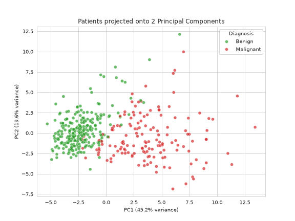

Scaling & PCA
Last updated on 2026-10-06 | Edit this page
Estimated time: 50 minutes
Overview
Questions
- Why does it matter that our features are measured on wildly different scales?
- How can we visualise 30 features at once?
- Is there really learnable structure in this data?
Objectives
- Explain why features on different scales can mislead an algorithm.
- Apply
StandardScaler, fitting on training data only. - Use Principal Component Analysis (PCA) to reduce 30 features to 2.
- Interpret a PCA scatterplot and the variance explained by each component.
Where we left off
As before, this recreates everything from the previous episodes. If your Colab session is still running and you have already executed these setup steps, you can skip this section. Otherwise, run the following code to recreate the environment.
PYTHON
import pandas as pd
import numpy as np
import matplotlib.pyplot as plt
import seaborn as sns
from sklearn.datasets import load_breast_cancer
from sklearn.model_selection import train_test_split
sns.set_style("whitegrid")
data = load_breast_cancer()
df = pd.DataFrame(data.data, columns=data.feature_names)
df['diagnosis'] = data.target
df['diagnosis_label'] = df['diagnosis'].map({0: 'Malignant', 1: 'Benign'})
X = df[list(data.feature_names)]
y = df['diagnosis']
X_train, X_test, y_train, y_test = train_test_split(
X, y, test_size=0.3, random_state=42, stratify=y
)The scale problem
Look at the summary statistics for a few of our training features:
PYTHON
X_train.describe().T[['mean', 'std', 'min', 'max']].loc[
['mean area', 'mean smoothness', 'mean radius', 'mean symmetry']
]OUTPUT
mean std min max
mean area 650.784171 340.295183 143.50000 2010.0000
mean smoothness 0.095789 0.013349 0.06251 0.1425
mean radius 14.093847 3.489558 6.98100 25.7300
mean symmetry 0.180493 0.028055 0.10600 0.3040mean area runs into the hundreds or thousands.
mean smoothness is a small decimal. These are all
legitimate measurements, but they live on completely different numeric
scales.
This matters because many algorithms compute distances or weights between features. If one feature has much larger numbers than the others, it can end up having a bigger influence on the model, even if it is not actually more clinically relevant.
It’s like comparing a patient’s weight in grams to their temperature in degrees and concluding that weight matters more because the number is bigger.
Putting features on equal footing
StandardScaler rescales every feature to have mean 0 and
comparable spread, so the algorithm judges features on genuine signal
rather than arbitrary units.
PYTHON
from sklearn.preprocessing import StandardScaler
scaler = StandardScaler()
X_train_scaled = scaler.fit_transform(X_train) # fit only on training data
X_test_scaled = scaler.transform(X_test) # apply the same transform to test dataWe can check that the scaling worked: each feature now has a mean close to 0 and a standard deviation of 1.
OUTPUT
mean std
mean radius -4.039203e-16 1.001259
mean texture 3.637515e-16 1.001259
mean perimeter -3.146562e-16 1.001259
mean area 6.248491e-17 1.001259
mean smoothness 1.673703e-16 1.001259Challenge 1: Why fit_transform on
train but only transform on test?
Look carefully at the two scaling lines above. The training data gets
fit_transform(), but the test data only gets
transform().
Why not just call fit_transform() on both?
fit calculates the mean and standard deviation used for
scaling. We only do this on the training data. If we also used the test
data, the scaler would be influenced by information that should be kept
separate until evaluation, giving us an overly optimistic view of how
well the model performs.
So we learn the scaling from the training data only, then apply that exact same transformation to the test data. The test set stays genuinely unseen.
This is called data leakage, and it’s one of the most common ways a real-world ML analysis quietly goes wrong.
Not all machine learning algorithms are affected by feature scaling. Tree-based models, such as the Random Forest we’ll train shortly, make decisions using one feature at a time and generally work well without scaling. PCA is different. It looks for the directions with the greatest variation in the data, so features with larger values can have a much bigger influence on the results. That’s why we scale the data before applying PCA.
Reducing 30 features to 2
We have 30 features. That’s too many to visualise or reason about simultaneously, but we don’t want to throw away useful information either.
Imagine taking a photo of a 3D object. The photo does not capture everything, but it still shows the main features of the object.
Principal Component Analysis (PCA) does something similar with data. It finds a simpler view of the data that keeps as much of the important variation as possible while reducing the number of dimensions.
PYTHON
from sklearn.decomposition import PCA
pca = PCA(n_components=2, random_state=42)
X_train_pca = pca.fit_transform(X_train_scaled)
print(f"Variance explained by PC1: {pca.explained_variance_ratio_[0]:.1%}")OUTPUT
Variance explained by PC1: 45.2%OUTPUT
Variance explained by PC2: 19.6%OUTPUT
Total variance captured in 2D: 64.8%PCA comes with a trade-off. The new variables, PC1 and
PC2, are no longer individual features such as tumour
radius or tumour texture. Instead, they combine information from many
original features. This makes the data much easier to visualise, but it
also means the axes are harder to interpret directly.
We’re using PCA here as an exploratory and visualisation tool. It is not a mandatory step in every machine learning project, and we will not be feeding these components into our classifier later.
Visualising the clusters
We’ve just compressed 30 numbers per patient down to 2. Now let’s see what these components tell us about the data.
PYTHON
pca_df = pd.DataFrame(X_train_pca, columns=['PC1', 'PC2'])
pca_df['diagnosis_label'] = y_train.map({0: 'Malignant', 1: 'Benign'}).values
plt.figure(figsize=(8, 6))
sns.scatterplot(
data=pca_df, x='PC1', y='PC2', hue='diagnosis_label',
palette={'Malignant': '#d62728', 'Benign': '#2ca02c'}, alpha=0.7
)
plt.title('Patients projected onto 2 Principal Components')
plt.xlabel(f'PC1 ({pca.explained_variance_ratio_[0]:.1%} variance)')
plt.ylabel(f'PC2 ({pca.explained_variance_ratio_[1]:.1%} variance)')
plt.legend(title='Diagnosis')
plt.show()
This is where PCA becomes useful. In the previous episode, no single pair of features clearly separated the two groups. By combining information from all 30 features into just two components, we can now see benign and malignant cases forming distinct clusters.
Even before training a classifier, this suggests that the data contains patterns that can help distinguish between the two groups. A classifier’s job is to learn and formalise those patterns.
Challenge 2: Reading the overlap
Look at the region where the red and green clusters meet.
What do those points represent clinically, and what does their existence predict about the accuracy of any model we train on this data?
Some patients do not fit neatly into either group. Their tumour measurements look similar to both benign and malignant cases, making them harder to classify.
This means we should not expect any model to be perfectly accurate on this dataset. Some mistakes are inevitable because the underlying measurements are not always clear-cut. That’s why, in the next episode, we’ll focus on which kinds of errors the model makes, rather than looking only at a single accuracy score.
The visible separation is the moment that builds trust in the computational process. Have to emphasize this
If asked how many components one should normally keep: in practice you’d keep enough to explain most of the variance, not always exactly 2. We use 2 here specifically because it’s what we can plot.
- Features measured on very different scales can mislead distance- and
variance-based algorithms;
StandardScalerputs them on equal footing. - Always
fitthe scaler on training data only, thentransformthe test data, to avoid data leakage. - PCA compresses many features into a few components that capture the most variation, trading interpretability for visualisability.
- The PCA plot shows clear separation between malignant and benign patients, confirming there is structure a model can learn.